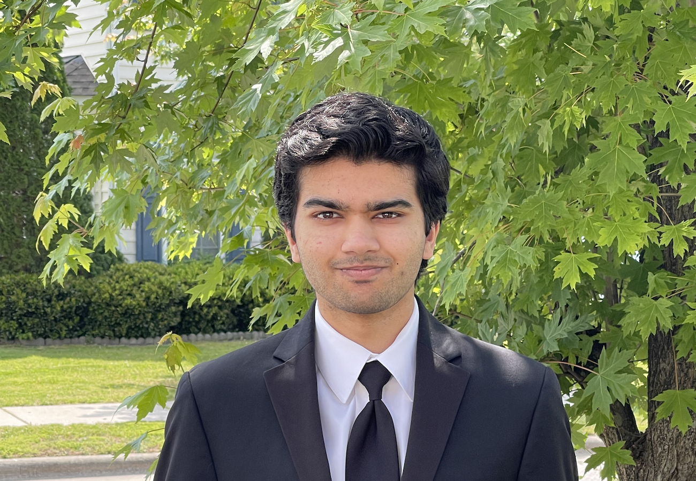

Siddhant Borkar
Part-time genius

Part-time genius
My name is Siddhant (Sid) Borkar and I’m a sophomore at the University of North Carolina at Chapel Hill studying Computer Science, with a double major in Biostatistics and pursuing the Shuford Entrepreneurship Minor. My academic and professional interests are broad, but they are grounded in my enthusiasm for technology and software development.
I was introduced to programming in the sixth grade when after a middle school gaming ban, I used scratch to develop my own version of the classic Super Smash Bros to play with my friends at recess…I got caught.
While in high school I enjoyed club activities including FRC Robotics as part of team 4561, the TerrorBytes. I was also president of 4 other clubs, through which I gained leadership experience. During the summer of 2022 I was accepted to NCSSM Summer Ventures, a fully funded research program, where I gained graduate level research experience with data science libraries such as numpy, pandas, and sklearn.
I’m currently an honors student at the University of North Carolina at Chapel Hill, where I enjoy participating in hackathons, being a member of App Team Carolina and Computer Science + Social Good, as well as boxing club.


For my App Team Carolina final project, I recreated the global social media app TikTok. Although it isn’t an exact replica, it does mimic many features including FYP scrolling, content interactions (liking, commenting, following), and content upload.
After identifying a deprivation of geography and culture general knowledge in my AP History classes, alongside two peers I developed an app gamify habit based learning for users. The app has two features: the geography game and the daily quiz.
My final project for COMP 110, where we build a terminal replica of Wordle. Simple and sleek